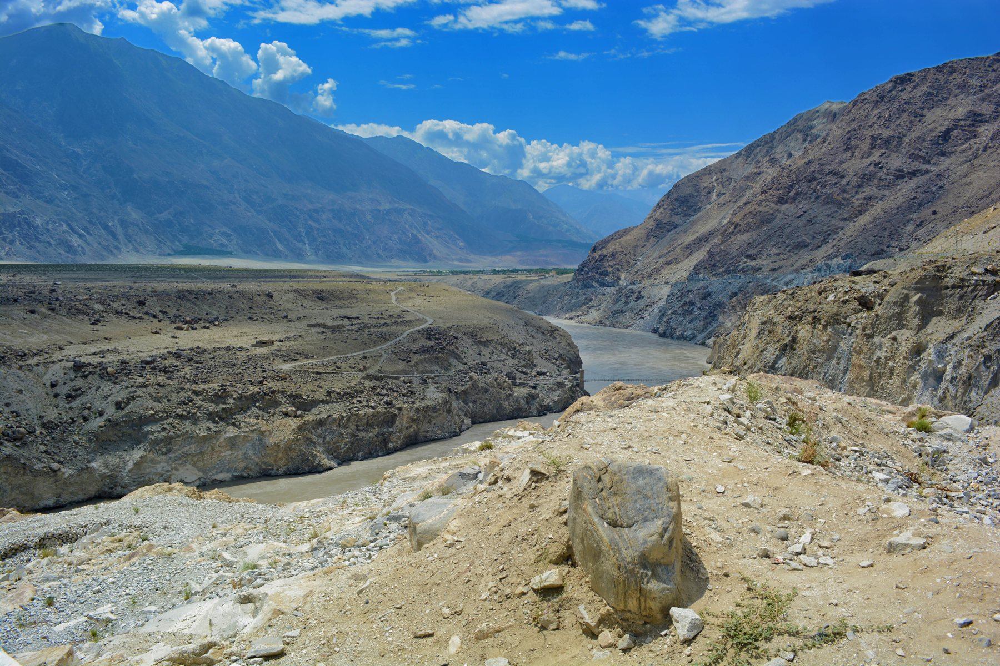

An interactive presentation
01 / THE BASIN
Press Space to reveal the first point.

THE COMPLETE PRESENTATION
Choose a slide, then press Space to reveal its information.
Slide photograph
Enable JavaScript to use the slides and Space-bar controls. The included README also contains the complete presentation text.